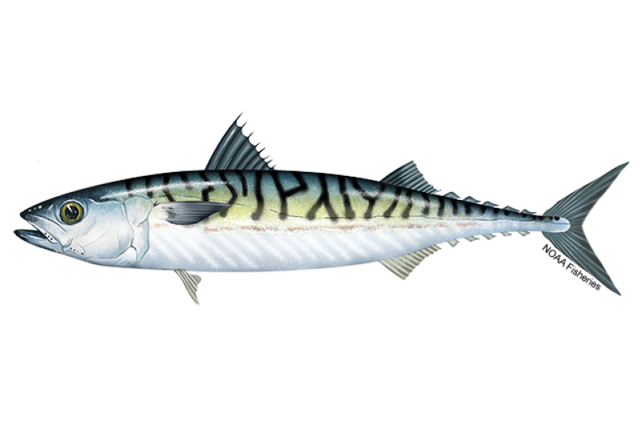

A fast-swimming, schooling fish, known for its oily flesh and distinctive striped body.
Habitat
Mackerel inhabit temperate and tropical seas, often near the surface in large schools.
Key Features
- Streamlined body with blue-green stripes
- High in omega-3 oils
- Popular for both commercial fishing and sport fishing